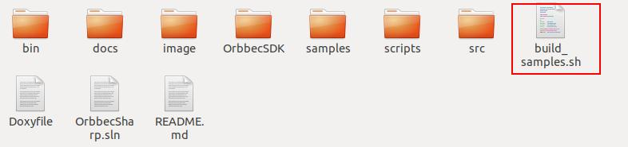
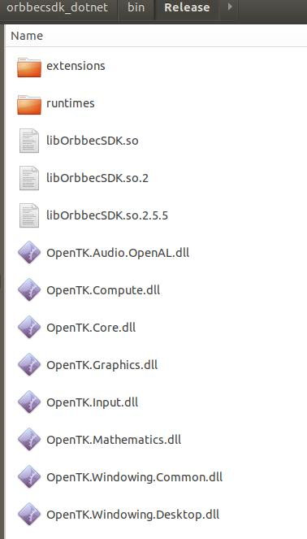
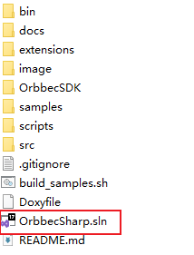
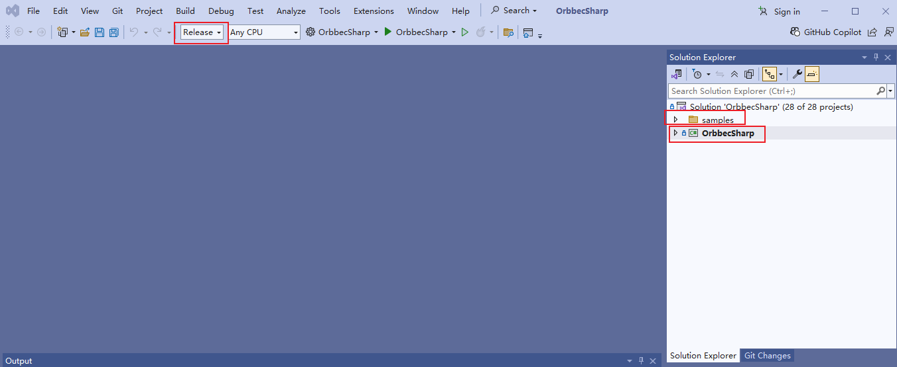
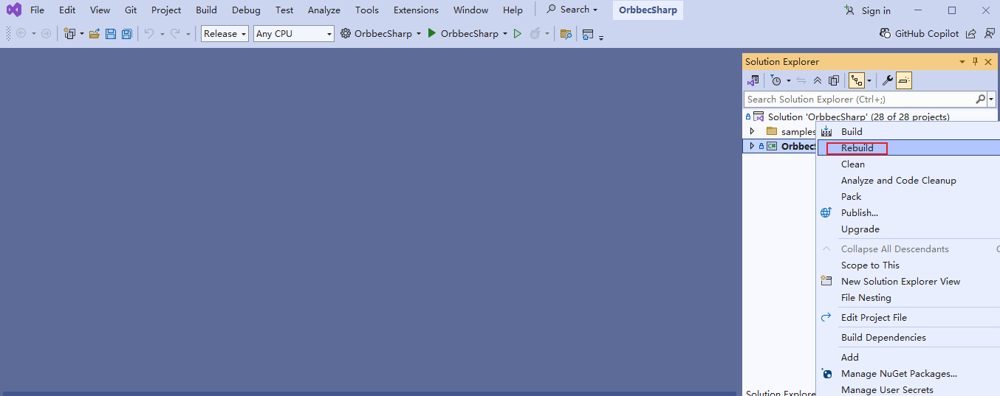
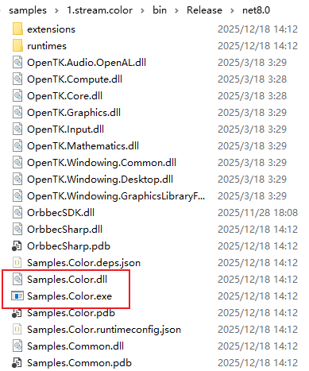
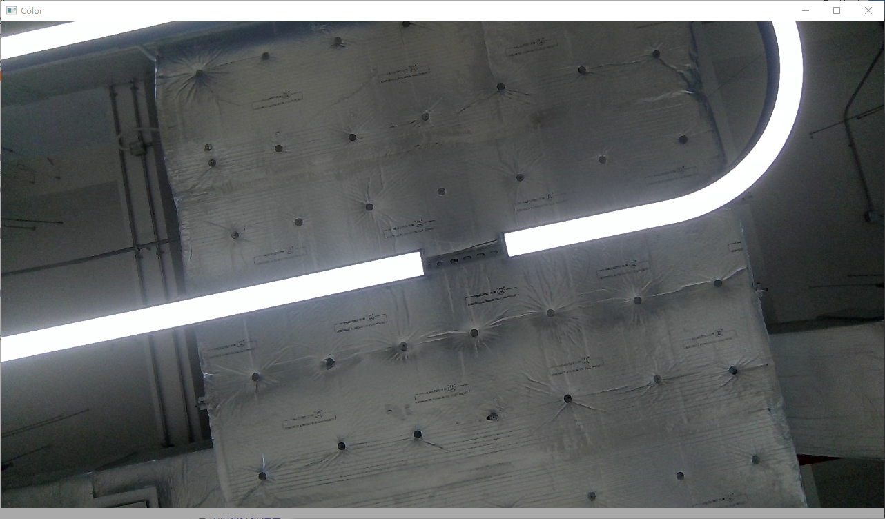
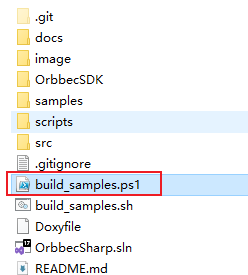
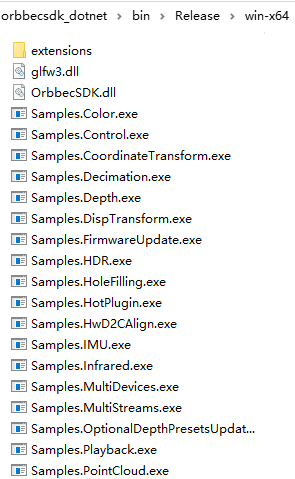

2.1. OrbbecSDK DotNet Wrapper Compilation
This document describes how to set up the development environment and compile the Orbbec OrbbecSDK DotNet Wrapper on supported platforms.
2.1.1. Environment
This section outlines the required development environment, including supported operating systems, compilers, and .NET versions needed to build the OrbbecSDK DotNet Wrapper.
2.1.1.1. Compilation Platform Requirements
Windows:
Architecture: x64
Toolchain: Visual Studio 2022 and above
Linux(x64/arm64):
Architecture: x64(amd64), arm64(aarch64)
Toolchain: gcc 7.5.0 and above
2.1.1.2. .NET Version
.NET 8.0 and above
Note
All build and run examples in this document use .NET 8.0 as the reference version.
On Windows, building projects targeting .NET 8.0 or above requires
Visual Studio 2022 or later.
2.1.2. Linux OrbbecSDK DotNet Wrapper Compilation
This section provides a comprehensive guide to installing, compiling, and running the Orbbec SDK for C#, covering all necessary steps for setup.
Contents:
Install Dependencies
Build the Project
Run the Examples
Optional: Generate the Project Using a Script
Clone the repository to get the latest version:
git clone https://github.com/orbbec/orbbecsdk_dotnet.git
cd orbbecsdk_dotnet
git checkout v2-main
2.1.2.1. Install Dependencies (Ubuntu)
Install the necessary .NET development packages
sudo apt-get install dotnet-sdk-8.0
2.1.2.2. Build the Project
Build the project:
cd orbbecsdk_dotnet/samples/1.stream.color
dotnet build
Note
By default,dotnet buildcompiles the project in Debug configuration. To build the Release version, specify the configuration explicitly:
dotnet build -c Release
2.1.2.3. Run the Examples
Run the examples:
cd orbbecsdk_dotnet
cd ./samples/1.stream.color/bin/Debug/net8.0/
dotnet ./Samples.Color.dll
2.1.2.4. Optional: Generate the Project Using a Script
You can also generate the project files using a script.
Use the build_samples.sh script.

A new build directory will be created automatically, and all generated project files will be placed inside this directory.
This approach keeps generated files separate from the source code.

2.1.3. Windows OrbbecSDK DotNet Wrapper Compilation
This section provides a comprehensive guide to installing, compiling, and running the Orbbec SDK for C#, covering all necessary steps for setup.
Contents:
Install Dependencies (Ubuntu)
Build the Project and Run the Examples
Optional: Generate the Project Using a Script
Clone the repository to get the latest version:
git clone https://github.com/orbbec/orbbecsdk_dotnet.git
cd orbbecsdk_dotnet
git checkout v2-main
2.1.3.1. Install Dependencies
Install the necessary .NET development packages
Download the official installer from Microsoft: https://dotnet.microsoft.com/en-us/download/dotnet/8.0
Run the installer and follow the on-screen instructions.
After installation, verify that .NET is installed correctly by running:
dotnet --version
2.1.3.2. Build the Project and Run the Examples
2.1.3.2.1. Step 1: Open the Visual Studio Project
Use the file explorer to directly start the Visual Studio project in the build directory, as shown in the following figure:

2.1.3.2.2. Step 2: Build the Project in Release Mode
After opening the project in Visual Studio:
Select Release configuration from the toolbar.
In the Solution Explorer, right-click OrbbecSharp and select Rebuild.
Then, right-click samples and select Rebuild.


2.1.3.2.3. Step 3: Locate the Compiled Samples
Each sample is now built into its own output directory.
For example, the color sample executable can be found at:
orbbecsdk_dotnet/samples/1.stream.color/bin/Release/net8.0/

2.1.3.2.4. Step 4: Run a Sample
Click on Samples.Color.exe, and the running result is as follows

2.1.3.3. Optional: Generate the Project Using a Script
You can also generate the project files using a script.
Use the build_samples.ps1 script.

A new build directory will be created automatically, and all generated project files will be placed inside this directory.
This approach keeps generated files separate from the source code.

2.1.4. Build Executable Binaries(Windows/Linux)
Use the following command to publish the project and generate executable binaries:
2.1.4.1. Linux x64
cd orbbecsdk_dotnet
dotnet publish -c Release -r linux-x64 -p:DebugType=none -p:PublishSingleFile=true
2.1.4.2. Linux ARM64
cd orbbecsdk_dotnet
dotnet publish -c Release -r linux-arm64 -p:DebugType=none -p:PublishSingleFile=true
2.1.4.3. Windows
cd orbbecsdk_dotnet
dotnet publish -c Release -r win-x64 -p:DebugType=none -p:PublishSingleFile=true
Note The published executable can be found in /orbbecsdk_dotnet/bin/.